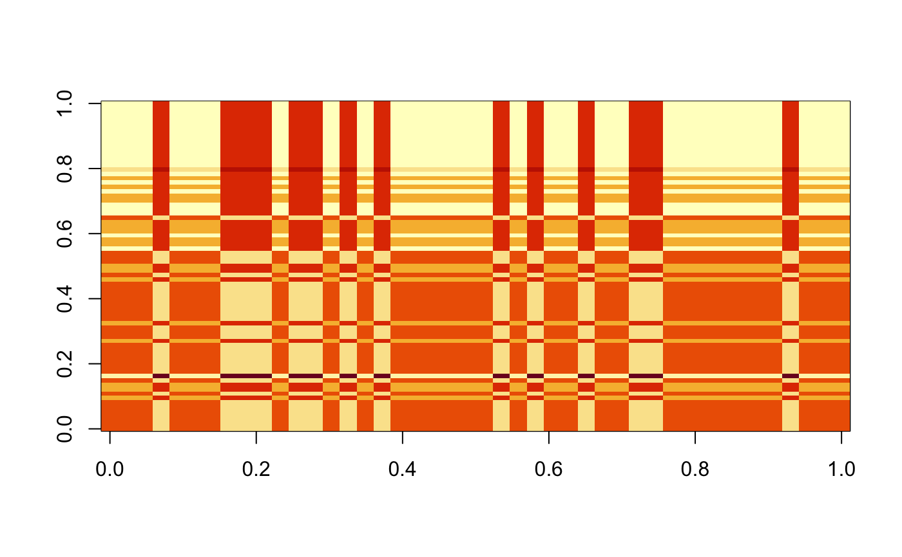

get_cluster_labels returns a factor vector of cluster labels.
get_cluster_centroids returns a k1-by-k2 matrix with the
estimated centroid of the k1-th row cluster and the k2-th
column cluster.
get_clustered_data returns a matrix (with the same dimensions and names
as the original data), but with the values for each row replaced by
its "estimated" value (i.e., the appropriate cluster centroid).
# S3 method for CBASS get_cluster_labels(x, ..., percent, k.row, k.col, type = c("row", "col")) # S3 method for CBASS get_cluster_centroids(x, ..., percent, k.row, k.col, refit = TRUE) # S3 method for CBASS get_clustered_data(x, ..., percent, k.row, k.col, refit = TRUE)
| x | An object of class |
|---|---|
| ... | Additional arguments - if any are provided, an error is signalled. |
| percent | A number between 0 and 1, giving the regularization level (as a fraction of the final regularization level used) at which to get cluster labels. |
| k.row | The desired number of row clusters |
| k.col | The desired number of column clusters |
| type | For |
| refit | Should "naive" centroids ( |
get_clustered_data returns centroids on the original scale of
the data, independent of any pre-processing flags passed to CBASS.
Note that exactly one of percent, k.row, k.col
must be supplied and that that k.row (if suppplied) will be
used even if type = "col" and vice versa.
#>#>#>#>#>#> Abraham Lincoln Andrew Jackson Andrew Johnson #> cluster_1 cluster_1 cluster_1 #> Barack Obama Benjamin Harrison Calvin Coolidge #> cluster_2 cluster_1 cluster_1 #> Chester A. Arthur Donald J. Trump Dwight D. Eisenhower #> cluster_1 cluster_2 cluster_2 #> Franklin D. Roosevelt Franklin Pierce George Bush #> cluster_2 cluster_1 cluster_2 #> George W. Bush George Washington Gerald R. Ford #> cluster_2 cluster_1 cluster_2 #> Grover Cleveland Harry S. Truman Herbert Hoover #> cluster_1 cluster_2 cluster_1 #> James A. Garfield James Buchanan James K. Polk #> cluster_1 cluster_1 cluster_1 #> James Madison James Monroe Jimmy Carter #> cluster_1 cluster_1 cluster_2 #> John Adams John F. Kennedy John Quincy Adams #> cluster_1 cluster_2 cluster_1 #> John Tyler Lyndon B. Johnson Martin van Buren #> cluster_1 cluster_2 cluster_1 #> Millard Fillmore Richard Nixon Ronald Reagan #> cluster_1 cluster_2 cluster_2 #> Rutherford B. Hayes Theodore Roosevelt Thomas Jefferson #> cluster_1 cluster_1 cluster_1 #> Ulysses S. Grant Warren G. Harding William Henry Harrison #> cluster_1 cluster_1 cluster_1 #> William Howard Taft William J. Clinton William McKinley #> cluster_1 cluster_2 cluster_1 #> Woodrow Wilson Zachary Taylor #> cluster_1 cluster_1 #> Levels: cluster_1 cluster_2# Get column clustering corresponding to the 3 cluster solution get_cluster_labels(cbass_fit, k.col = 3, type = "col")#> amount appropri british cent commerci commission consider #> cluster_1 cluster_1 cluster_1 cluster_1 cluster_1 cluster_1 cluster_1 #> develop expenditur farm feder fiscal help indian #> cluster_2 cluster_1 cluster_2 cluster_2 cluster_1 cluster_2 cluster_1 #> intercours island june mail mexico navi need #> cluster_1 cluster_1 cluster_1 cluster_1 cluster_1 cluster_1 cluster_2 #> per provis receipt reform regard report shall #> cluster_1 cluster_1 cluster_1 cluster_2 cluster_1 cluster_1 cluster_1 #> subject territori treasuri treati upon vessel america #> cluster_1 cluster_1 cluster_1 cluster_1 cluster_1 cluster_1 cluster_2 #> bank incom million price spain articl cut #> cluster_1 cluster_2 cluster_2 cluster_1 cluster_1 cluster_1 cluster_3 #> dollar econom women educ school bill tariff #> cluster_2 cluster_2 cluster_3 cluster_2 cluster_2 cluster_2 cluster_1 #> unemploy weapon get method farmer challeng achiev #> cluster_3 cluster_3 cluster_3 cluster_2 cluster_2 cluster_3 cluster_2 #> democraci area billion problem basic budget goal #> cluster_3 cluster_2 cluster_3 cluster_2 cluster_3 cluster_3 cluster_3 #> job level nuclear percent program spend technolog #> cluster_3 cluster_3 cluster_3 cluster_3 cluster_3 cluster_3 cluster_3 #> today tonight worker inflat soviet #> cluster_3 cluster_3 cluster_3 cluster_3 cluster_3 #> Levels: cluster_1 cluster_2 cluster_3# Get row clustering corresponding to the 3 column clusters get_cluster_labels(cbass_fit, k.col = 3, type = "row")#> Abraham Lincoln Andrew Jackson Andrew Johnson #> cluster_1 cluster_1 cluster_1 #> Barack Obama Benjamin Harrison Calvin Coolidge #> cluster_2 cluster_1 cluster_1 #> Chester A. Arthur Donald J. Trump Dwight D. Eisenhower #> cluster_1 cluster_2 cluster_2 #> Franklin D. Roosevelt Franklin Pierce George Bush #> cluster_2 cluster_1 cluster_2 #> George W. Bush George Washington Gerald R. Ford #> cluster_2 cluster_1 cluster_2 #> Grover Cleveland Harry S. Truman Herbert Hoover #> cluster_1 cluster_2 cluster_1 #> James A. Garfield James Buchanan James K. Polk #> cluster_1 cluster_1 cluster_1 #> James Madison James Monroe Jimmy Carter #> cluster_1 cluster_1 cluster_2 #> John Adams John F. Kennedy John Quincy Adams #> cluster_1 cluster_2 cluster_1 #> John Tyler Lyndon B. Johnson Martin van Buren #> cluster_1 cluster_2 cluster_1 #> Millard Fillmore Richard Nixon Ronald Reagan #> cluster_1 cluster_2 cluster_2 #> Rutherford B. Hayes Theodore Roosevelt Thomas Jefferson #> cluster_1 cluster_1 cluster_1 #> Ulysses S. Grant Warren G. Harding William Henry Harrison #> cluster_1 cluster_1 cluster_1 #> William Howard Taft William J. Clinton William McKinley #> cluster_1 cluster_2 cluster_1 #> Woodrow Wilson Zachary Taylor #> cluster_1 cluster_1 #> Levels: cluster_1 cluster_2#> [,1] [,2] [,3] #> [1,] 2.778695 1.599787 0.3032325 #> [2,] 1.300215 3.396630 3.1146839